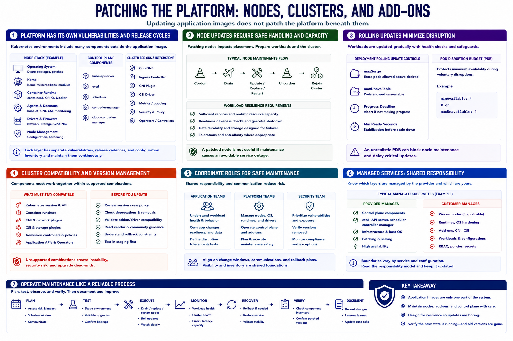

Kubernetes and Runtime Considerations
Connecting to LMS... Progress: in progress

Narration
Updating application images does not patch the platform beneath them. Kubernetes nodes have operating systems, kernels, container runtimes, agents, drivers, and management components with separate vulnerabilities and release cycles. Control-plane components and cluster add-ons also require inventory and maintenance.
Node updates often require cordoning, draining, replacement, or restart. Workloads must tolerate rescheduling through replicas, readiness checks, graceful shutdown, storage design, and realistic resource capacity. A patched node is not useful if maintenance causes an avoidable service outage.
Rolling updates replace workload instances gradually. Deployment settings control surge, unavailable replicas, and health evaluation. Pod disruption budgets can protect minimum availability during voluntary disruption, but an unrealistic budget can also block node maintenance.
Cluster compatibility matters. Kubernetes versions, runtimes, network and storage plugins, admission systems, and application APIs must remain within supported combinations. Review version-skew policy, deprecations, vendor guidance, and rollback constraints before updating platform components.
Coordinate application and platform teams. Application owners understand workload health and data behavior; platform teams manage nodes, scheduling, runtimes, and control-plane dependencies. Security provides prioritization and verifies that exposed versions were actually removed.
For managed services, clarify which layers the provider patches and which remain the customer's responsibility. Test maintenance in representative environments, monitor workloads and cluster health, retain recovery procedures, and verify node and component inventory after rollout.